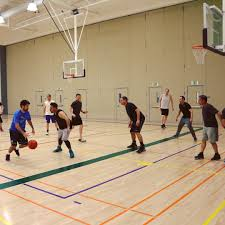

Solution 1: Refocus on Founding Principles |
|||
|  |
The first and best solution to this problem is to close the Brac off to the outside teams. Let’s refocus Babson’s Brac on the Babson Students. This solution is simple, not only do the students regain the ability to take advantage of their facilities at whichever time works but for them. In addition, the risks of outsiders bringing covid into our community go to 0. This solution is what an administration that truly cared about the health and safety of the student body would pick. | ||
Solution 2: Off Peak Times Compromise | |||
|
Option two is a compromise. This option would have outsiders allowed at off-peak usage times. In talking with regular Brac users they suggested 8 am- 3 pm and 8 pm-12 pm Monday-Thursday. These time slots would allow Brac to still generate outside revenue but would at least put on the facade that students come first. While this option would still entail the administration putting its students at risk of death, they seemed fine with taking this chance before so I am sure they would take it again. While this plan is not perfect it is infinitely better than the current situation. | |||